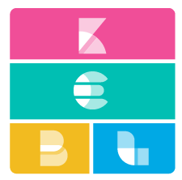
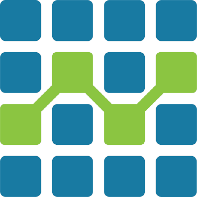

Third Party Integration¶
PSYGIG Triage SDK seamlessly integrates with third-party data platforms, simplifying the process of transporting your data to your preferred storage/analytics platform.
注釈
Integration with third party platforms is a work-in-progress. Please to confirm support for your platform.
Metrics Collection¶
| Amazon AWS IoT | |
| Google Cloud IoT | |
 |
Microsoft Azure IoT |
| Alibaba Cloud IoT Platform | |
| IBM Watson IoT Platform | |
| Oracle IoT Cloud Service |
Log Collection/Analysis¶
|  | Elastic Stack (ELK Stack) |
| Amazon Elasticsearch Service | |
| Logz.io | |
| Loggly | |
| Graylog | |
| Splunk | |
| Datadog | |
| Sentry.io |
Database/Data Warehouses¶
 |
MongoDB |
 |
MySQL |
 |
SQL Server |
 |
InfluxDB |
| Google BigQuery | |
| Firebase Realtime Database | |
| Apache CouchDB | |
| Couchbase | |
|  | OpenTSDB |
| CrateDB |